PHY-2105 • Full marks 40 • 2 hours • Q1–Q7 compulsory, then Q8 or Q9
Each question is shown exactly as printed (cropped from the paper), followed by Given → 📐 Formula → Steps → Answer, with diagrams. Blue 🧭 Why? boxes explain directions; red boxes flag ambiguities in the paper.
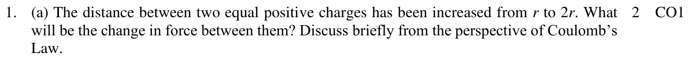
Coulomb's law — size of the force. Like charges repel, unlike attract.
Step 1. With \(r \to 2r\):
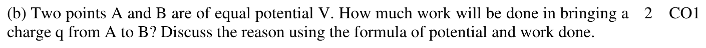
work done to move q (slowly) from A to B
Step 1. \(V_A = V_B = V\), so
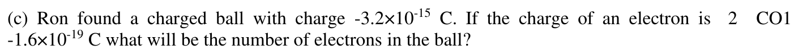
quantization of charge
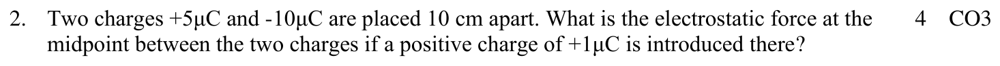
Coulomb's law — size of the force. Like charges repel, unlike attract.
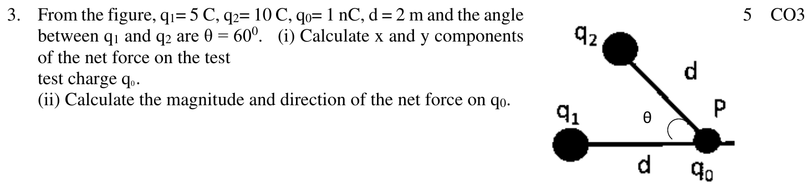
Coulomb's law — size of the force. Like charges repel, unlike attract.
Step 1. (i) Components:
Step 2. (ii) Resultant:
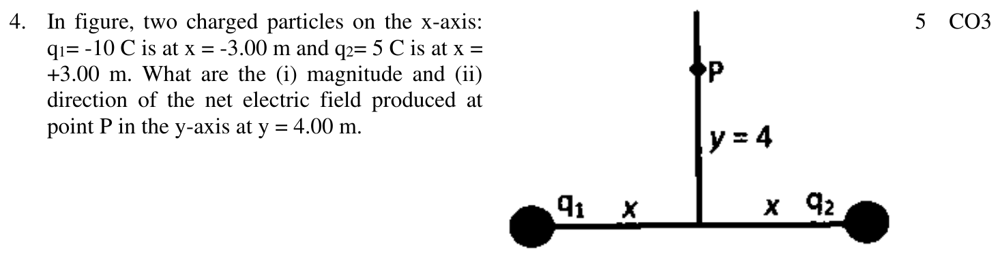
field of a point charge — away from +, toward −
Step 1. Distances: \(r = \sqrt{3^2 + 4^2} = 5\) m for both.
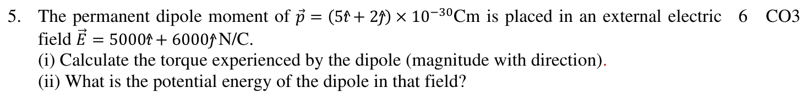
torque
potential energy
Step 1. (i) Both vectors lie in the xy-plane, so only the k̂ part survives:
Step 2. (ii)
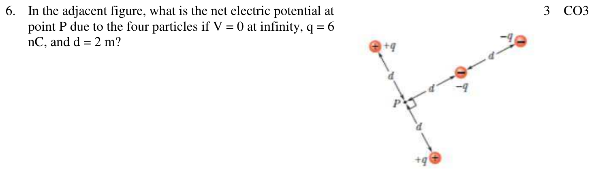
scalar sum — signs matter, directions don't
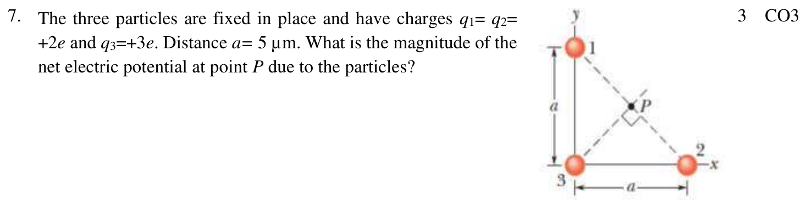
the midpoint of the hypotenuse is equidistant from all three corners
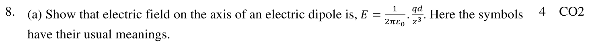
Put the dipole on the z-axis with its centre at the origin: +q at z = +d/2, −q at z = −d/2. P is on the axis at distance z.
Step 1. Fields at P (both along the axis; + pushes away, − pulls toward):
Step 2. Factor out \(z^2\):
Step 3. For \(z \gg d\), use \((1 \pm x)^{-2} \approx 1 \mp 2x\):
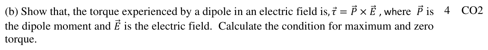
Step 1. In a uniform field the forces on the ends are \(+q\vec E\) and \(-q\vec E\): equal and opposite, so the net force is zero.
Step 2. Each force has a lever arm \((d/2)\sin\theta\) about the centre, and both turn the dipole the same way:
Step 3. The torque is perpendicular to the plane of \(\vec p\) and \(\vec E\) and turns \(\vec p\) toward \(\vec E\) — exactly the cross product:
Step 4. Conditions:
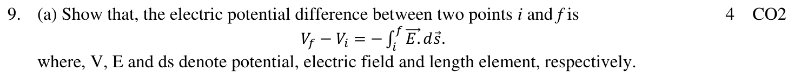
Step 1. A positive test charge \(q_0\) moves through \(d\vec s\) in a field \(\vec E\). The field's force is \(q_0\vec E\), so the work done on it is
Step 2. Add up the work along the whole path from i to f:
Step 3. The potential difference is the work per unit charge with a minus sign, \(V_f - V_i = -W/q_0\):
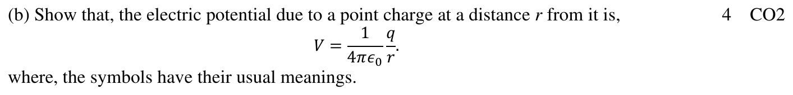
Step 1. Start from \(V_f - V_i = -\int_i^f \vec E\cdot d\vec s\). Take the test charge from P (distance R) straight out to infinity, along the field line:
Step 2. Set \(V_f = V(\infty) = 0\) and \(V_i = V\):
Step 3. So, renaming R as r: